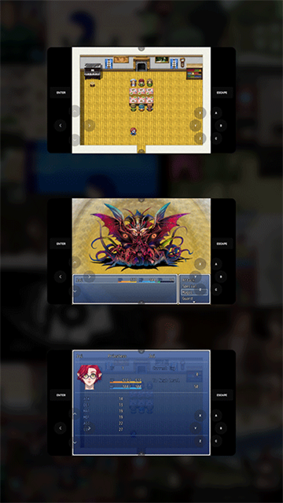

把几万款 PC 独立游戏搬去手机，JoiPlay 我用了一周
一个程序员博主的真实上手体验——从 RPG Maker 到 Ren'Py，从虚拟手柄到存档回滚，聊聊这个能让安卓手机变身独立游戏机的 APP 到底好不好用。
为什么我会装它
上周在 itch.io 上被一个像素风 RPG Maker 小游戏种草了——看了半小时直播，想自己上手试试，但打开 Steam 发现它只有 PC 版。通勤路上总不能背着笔记本跑 RPG 吧？翻评论区有人提了一句 JoiPlay，去它的官网看了一下——能在安卓上跑 RPG Maker 和 Ren'Py 的独立游戏。
说实话我一开始没抱太大期望——手机上跑 PC 游戏引擎？听着就像那种打着"万能模拟器"旗号实际兼容性惨不忍睹的套壳 APP。不过反正免费，从官方下载拿一个试试也不亏。
初印象：安装比想象中麻烦，但界面很干净
JoiPlay 的安装逻辑和普通 APP 不太一样。它分两层：一个核心 APK，然后是按需安装的插件——RPG Maker 系列一个插件、Ren'Py 一个、Flash 一个、HTML5 还有内置的。不玩哪种引擎就不用装哪个插件，这种模块化设计我挺喜欢，至少不会逼我装一堆用不上的东西。
核心 APK 装上之后，打开界面是一个简洁的游戏库，上面空空如也——得自己把游戏文件加进来。点右上角的加号选择游戏目录，它会自动扫描识别，RPG Maker 的 Game.exe、Ren'Py 的 .exe 或者 .py 文件，基本上丢进去就能认出来。

第一眼界面没有花里胡哨的东西，就是游戏列表、搜索、设置三个入口。和那些堆满广告、逼着你注册账号的模拟器比起来，清爽得有点意外——后来才知道 JoiPlay 完全离线运行，游戏文件只在本地，连账号系统都没有。
核心体验：三个让我惊喜的地方
装完 RPG Maker 插件和 Ren'Py 插件之后，我试了大概七八款游戏，有 itch.io 上下载的英文 RPG，也有 DLsite 的视觉小说，还有几个中文同人圈的 RPG Maker XP 作品。三个印象最深的点：
虚拟手柄不是凑数的
之前用过几款安卓模拟器的虚拟手柄，默认布局要么按钮巨小按不准，要么摇杆灵敏度调不了，基本是摆设。JoiPlay 的虚拟手柄这次让我改观了——2025 年后的版本加了完整的可视化编辑。
打开任意一款游戏，从顶栏拉下来进设置，找 Gamepad 相关的选项就能进编辑模式。按钮边缘会出现控制手柄，按住拖动改位置、拉右下角的小手柄调尺寸、长按还能删按钮或加新的。我花了大概五分钟把 RPG Maker 默认的方向键和确认键位置调了一下，把 Enter 映射到"○"键、Esc 映射到"×"，手感一下就顺了。

而且这个编辑是所见即所得——改完直接退出编辑模式试，不顺再回来调。布局还能导出来备份，换个手机直接导入不用重新调。说实话我没想到一个独立开发者做的 APP 能把虚拟手柄做这么细。
Ren'Py 的回滚功能真的救了我
玩视觉小说的时候经常不小心按快了跳过关键对话，或者选错了分支想改回去。之前在 PC 上玩还好，Ren'Py 本身支持回滚，但手机上的 APP 大多把这个功能阉割了或者藏得很深。
JoiPlay 的 Ren'Py 插件把回滚完整实现了——进游戏按 Esc 弹出菜单，History 可以翻回去看所有读过的对话，Rollback 可以撤销刚刚的选择和对话。更方便的是我把"滚轮上"映射成了回滚上一句，玩的时候手指在屏幕上划一下就能回看，不用每次都进菜单。
有一点要注意：回滚功能会占内存，特别长的视觉小说可能会有点压力，但现在的手机基本都够用，除非你还在用 2GB RAM 的老机器。
RPG Maker 的加密资源自动解密，真的省事
很多独立 RPG Maker 作者会把游戏的 Data 目录打包加密成 .rgss2a 或 .rgss3a 文件，在 PC 上引擎会自动解密加载，但换到其他平台经常要手动解包。我之前试过用另一个模拟器跑某款 RPG Maker VX Ace 游戏，结果报错找不到资源文件，折腾了半小时才找到一个解包工具。
JoiPlay 的 RPG Maker 插件内置了解密器——检测到这些加密文件的时候会自动解密到内存里，用户完全无感知。我装的那五六款 RPG Maker 游戏，直接丢进去就能跑，没有一款报资源加载错误的。有个 VX Ace 游戏画面曾经显示乱码，进设置把 Force Miniz 开关打开就正常了。joiplay文档里也特意提到了——这个开关处理的是用了 Miniz 压缩库的特殊情况，默认会自动检测，但偶尔需要手动开启。
几个让我有点别扭的地方
说点实话，不是所有体验都完美。
插件版本和核心 APK 是独立更新的——核心 APK 可能是 1.21.000，RPG Maker 插件已经到 1.22.008 了。这本身是好事，兼容性修复能更快推送，但对用户来说意味着你得时不时手动检查一下插件有没有新版本，不像一体化应用那样自动更。
还有存档的问题。JoiPlay 的存档存在安卓应用的私有目录里，普通文件管理器根本访问不了。想备份或者拷去 PC，要么用 JoiPlay 游戏内的导出功能（还不是所有插件版本都有），要么用 ADB 命令。对于不想折腾命令行的玩家来说，这个门槛有点高。而且 PC 版游戏的存档和 JoiPlay 版基本不兼容，想从 PC 转移进度基本得重开。
联机功能基本别指望。JoiPlay 不走完整网络栈，游戏内的多人联机、排行榜、云存档这些特性大概率都用不了。单机是它的主战场，想在手机上玩联机版独立游戏，这条路走不通。
适合谁，不适合谁
适合：
- 喜欢独立游戏尤其是 RPG Maker / Ren'Py 作品的玩家，手机上补完 PC 上没时间玩的游戏
- 视觉小说爱好者，Ren'Py 的回滚和历史回看在手机上同样好用
- 折腾党，喜欢自定义按键布局、研究引擎兼容的那类人
不适合：
- 期待在手机上玩 Unity 3A 大作的——这个真不是 JoiPlay 的定位，Unity 游戏要么有官方安卓版要么没有
- 想玩联机的——老老实实 PC 或主机吧
- 对权限敏感的——虽然 JoiPlay 本身安全，但插件和游戏文件都要自己操心来源，别从不明渠道装
最后说一句
我在它的官方渠道看到 Google Play 上的版本已经落后好几个大版本了，很多新功能比如自动 RTP 下载、Godot 支持、以及我上面提到的 2025 年后的虚拟手柄重构，Play 商店里的版本都没有。想用好就得换官方公开构建。
整体来说，作为一个个人独立开发的项目，JoiPlay 的完成度让我刮目相看。免费、离线、模块化、插件体系清晰，覆盖了 RPG Maker 全系列、Ren'Py 全系列、HTML5 这几大类引擎，兼容性能到 90% 以上。如果你是独立游戏爱好者又想在通勤碎片时间上补完，值得装一个试试。相关的引擎架构拆解和插件配置手册，我也同步整理到了三个代码仓库——GitHub、Gitee、GitCode。